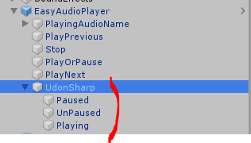
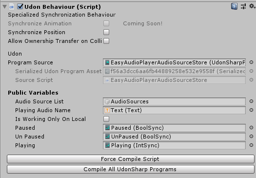

目標
Udon#コードでUdonSyncedを使わずに、各ネットワークユーザーのboolの値を同期する。 intもがんばってみる（ただしintに対しては、不完全な対応になります）。
まとめ
以下のようなコードでがんばります。
bool向け対応
using UdonSharp;
using UnityEngine;
using VRC.Udon.Common.Interfaces;
using VRC.Udon;
/// <summary>
/// Sets a value with network users.
///
/// NOTE:
/// Don't use DoSetValueTo*() directly.
/// Please use Set() instead.
/// </summary>
public class BoolSync : UdonSharpBehaviour {
private bool val = false;
public void Set(bool val) {
this.SendCustomNetworkEvent(NetworkEventTarget.All, "DoSetValueTo" + val);
}
public void DoSetValueToTrue() {
this.val = true;
}
public void DoSetValueToFalse() {
this.val = false;
}
public bool Get() => this.val;
}int向け対応-1, ..., maxValueという範囲への限定的な対応- メタプログラミングがんばれば
int.MinValue, ..., int.MAX_VALUEくらいも可能ではあると思う（Udon#でメタプログラミングできるかは不明）
using UdonSharp;
using UnityEngine;
using VRC.Udon.Common.Interfaces;
using VRC.Udon;
public class IntSync : UdonSharpBehaviour {
private readonly int MAX_VALUE = something; // 最大値
private int val = 0;
public void Set(int val) {
if (val > -1 && this.MAX_VALUE < val) {
Debug.Log($"Illegal argument (the argument must be -1~{this.MAX_VALUE}): {val}");
return;
}
if (val == -1) {
this.SendCustomNetworkEvent(NetworkEventTarget.All, "DoSetValueToNothing");
} else {
this.SendCustomNetworkEvent(NetworkEventTarget.All, "DoSetValueTo" + val);
}
}
public int Get() => this.val;
/* - - vvvvvvvvvvvvvvv - - */
/* - - v UNDERGROUND v - - */
/* - - vvvvvvvvvvvvvvv - - */
public void DoSetValueToNothing() {
this.val = -1;
}
public void DoSetValueTo0() {
this.val = 0;
}
public void DoSetValueTo1() {
this.val = 1;
}
public void DoSetValueTo2() {
this.val = 2;
}
public void DoSetValueTo3() {
this.val = 3;
}
/* 以下、対応させたい値まで各 */
}あるUdonSharpBehaviourでそれぞれを使う。
public class Foo : UdonSharpBehaviour {
public BoolSync paused;
public BoolSync unPaused;
public IntSync playing;
}これらのためのGameObjectを作る。

FooのInspectorでそれらをD&Dして参照させる。

導入
先日、VRChat（VRCSDK3）向け音楽プレイヤーをリリースしました 🎉✨✨
これのネットワーク同期を実装するにあたって、「UdonSyncedが同期されたりされなかったりする」という問題が起きました。
UdonSyncedなintが同期されない件、解決しました✨😊
— ⿻あいや⿻ VRChat＆言語自作＆技術書典「せつラボ」 (@public_ai000ya) September 6, 2020
// これで解決する
for (var i = 0; i < 100000; i++) {} pic.twitter.com/j5CQiHmpr4
おそロシア。
またUdonSyncedについての仕様が見つからなかったので（どういうことなの？？）、UdonSyncedを捨てる覚悟を決めました。
解説
これに対して上記「まとめ」に書いたように、対応しました。
intに関しては読者様に納得していただけるような対応ではないと思いますが、今回の用途ではこれで十分だったため、このようにしました。
「IntSyncって言ってるけどintじゃないじゃん！」…… はい、まったくもってその通りでござる。
……。
設定方法
まず最初の難解な部分は、BoolSyncおよびIntSyncがUdonSharpBehaviourであることでしょうか。
これは現時点（2020-09-13）でUdon#がUdonSharpBehaviour以外のクラスを作成できないためです。
そのためのワークアラウンドを示していきます。
ここでBoolSyncやIntSyncを使いたいUdonBehaviorのあるGameObjectをFooと呼び、次のように定義しておきます。
public class Foo : UdonSharpBehaviour {
public BoolSync paused;
public BoolSync unPaused;
public IntSync playing;
public override void Interact() {
Debug.Log(this.paused.Get());
Debug.Log(this.unPaused.Get());
Debug.Log(this.playing.Get());
}
}ここでそれぞれのフィールドはpublicである必要があります。 それはそれぞれを、UnityのInspectorで設定してあげる必要があるからです。 （その方法を、次に示します。）
次にそれぞれのフィールドの値を保持するものを、GameObjectとして作成してあげます。 （今回はEmpty Objectの中にまとめて作りました。）
その後、Fooを設定されているGameObjectをクリックし、Public VariablesにそれぞれをD&Dしてあげます。
設定は以上です。
あとはFoo#Interact()などで、this.paused・this.unPaused・this.playingのSet()・Get()メソッドを使ってあげてください。
（余談: setter/getterを使ってないのも、Udon#がそれをサポートしてくれてないから……。）
以上です。
ありがとう！
この記事はこちらから修正リクエストを送ることができます。
Udon#でUdonSyncedを使わない方法 - github
ゴミ箱ボタンの左にある、鉛筆ボタンを押してね！